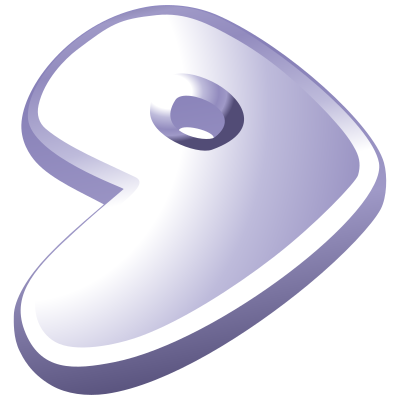

Projects, Scripts, and Various Works
bash-completions
Bash completion scripts for ebuild, gdb and rake.
binfind.bash, libfind.bash, and manfind.bash
These are the scripts that I commonly use for finding executable binaries, libraries, and manual page files.
build-initramfs.bash
Automates building of an initrd image using the files and directories in a specified directory.
cd.bash
A simple and convenient enhancement wrapper for cd.
digest-kangarootwelve
A KangarooTwelve library for Ruby.
digest-xxhash
An XXHash library for Ruby.
dnscrypt-proxy-multi.rb
A Ruby script that runs multiple instances of dnscrypt-proxy with many features.
See blog post for details.
geany-patches
A collection of patches I made for Geany that adds more features. See my blog post for details.

getabspath and getcleanpath
getabspath and getcleanpath are shell script functions that get absolute forms of a UNIX path.
git/*
A few tools written in bash for managing git repositories.
hist.bash
Searches ~/.bash_history for entries matching specified keywords.
hyphenate.rb
Renames files and directories to the hyphenated version of their filename.
killtree.bash
Sends signals to process trees with style.
The script also contains reusable functions for managing process trees.
killtree-lite.bash
A less poetic version of killtree.
overlay 
My personal overlay for Gentoo Linux’s Portage. It can be installed locally
through layman with layman -a konsolebox. See details, or check repository.
map-partitions.bash
Maps partitions in a block device to logical devices using dmsetup and sfdisk.
The losetup -P command can probably do the same.
minimalism
A color scheme for Geany with a minimalistic feel or approach. See repository page for preview.
PlayShell
A simple console-based application for playing media files using known media players like SoX, VLC, MPlayer and FFplay as backend.
{kind=link}
{kind=link}
rcopy.bash
Copies files along with their dependencies to a virtual root directory.
The resulting file’s path is reproduced based on its source’s location.
This tools is useful for preparing binaries in a chroot environment.
rubyexec.c
A Ruby binary selector
Shell Script Loader
A framework for shell scripts that provides functions that can be used to load, include or call module shell scripts. It supports most shells based on Bourne shell including Bash, Ksh and Zsh. A compiler can also be used.
tail-follow-grep.bash
Basically a wrapper for tail -f and grep --line-buffered.
tcpdump-master.bash
A script to start and manage a tcpdump service.
It can automatically delete files older than a specified number of days and truncate the main log file if it exceeds a specified size in bytes.
This was originally written in 2010 for a LinuxQuestions.org thread but tcpdump includes most of its features now.
trim-trailing-spaces.bash
Removes trailing spaces in files.
uuidfstab.bash
Replaces device paths in an fstab file with their UUID equivalents.
xn.rb
Renames files and directories based on their 160-bit KangarooTwelve checksum.
It supports recursive renaming and avoids naming conflicts among files and directories with distinct content by appending supplemental suffixes.